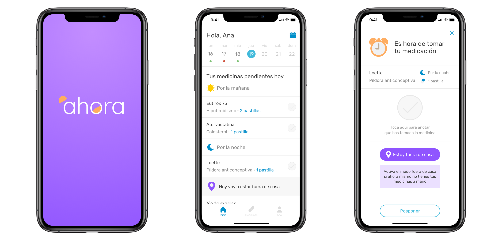
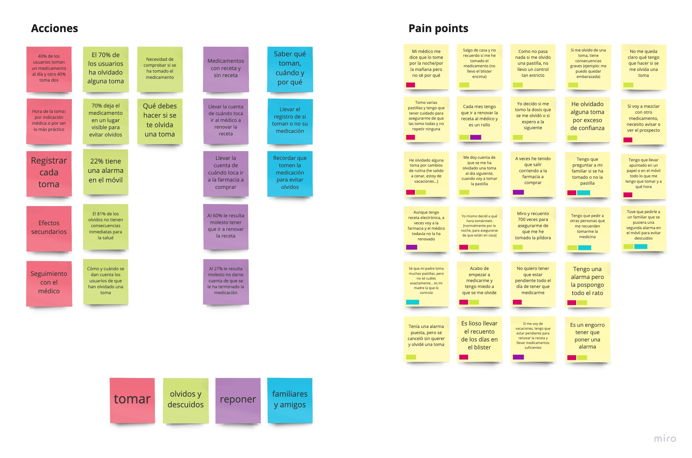
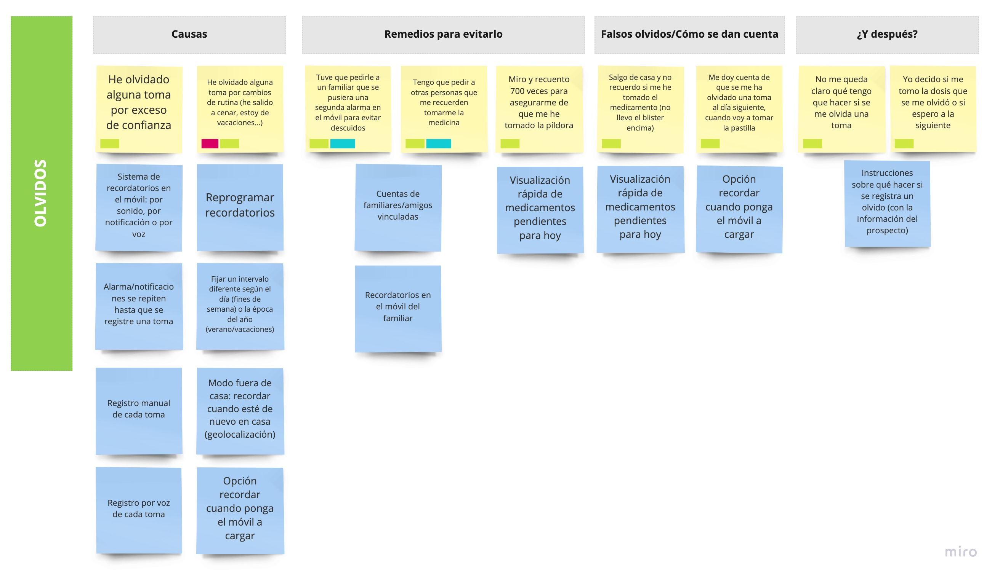
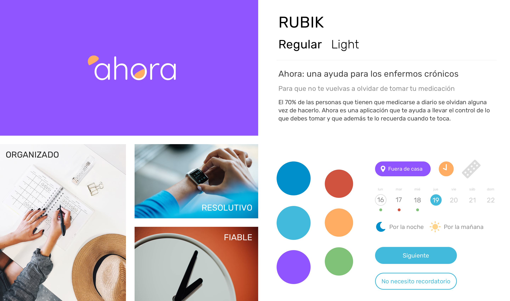

Datos básicos
Proyecto individual
Tiempo: dos semanas
Tipo: UX + UI
Herramientas: Sketch + InVision + Keynote
En España hay 19 millones de enfermos crónicos, mientras que el 17% de las mujeres toman la píldora anticonceptiva. Medicarse a diario es una necesidad para un gran número de personas, pero los olvidos (puntuales o frecuentes) forman parte de su día a día. El exceso de confianza y los cambios de rutina están detrás de la mayoría de los descuidos.
¿Cómo solucionar este problema? Ahora es una alarma que pretende ser mucho más que una alarma. La aplicación es un asistente que los pacientes llevan en el bolsillo a todas horas y que les ayuda en tres frentes: a organizarse para saber qué tienen que tomar cada día, con un sistema de registro de medicamentos; a recordar en el momento en el que tienen que tomar su medicación, con la posibilidad de programar alarmas y notificaciones; y a adaptar su medicación a sus cambios de rutina, con la opción de activar alarmas por geolocalización que les ayudan a evitar los descuidos.
Para este proyecto conté con dos semanas de trabajo, en las que realicé todo el proceso UX y UI. Desde la investigación y definición del problema, a la ideación y definición de la solución, para finalmente diseñar y prototipar el MVP. En todo momento realicé testeos con los usuarios, aplicando la metodología agile para refinar e iterar sobre la solución.
El reto de los olvidos y los descuidos
Los olvidos y los despistes son el gran desafío al que se enfrentan las personas que deben medicarse a diario. Según la investigación que realicé para este proyecto (64 encuestas y 8 entrevistas en profundidad), tres de cada cuatro usuarios han olvidado en alguna ocasión tomar su medicación.
Descuidos puntuales
El 68% de los usuarios olvidan su medicación de vez en cuando
Olvidos frecuentes
En el 8% de los casos los olvidos se producen de forma habitual
Consecuencias
En 1 de cada 4 casos los olvidos tienen consecuencias en la salud
¿A qué se deben estos olvidos? Los usuarios señalan dos motivos recurrentes:
01 Cambios de rutina
La mayoría de los descuidos se producen por cambios puntuales en la rutina. El ejemplo más claro: el usuario sale una noche a cenar fuera de casa y en el momento en el que le toca tomarse la medicación, no la lleva encima. Al regresar a casa, no recuerda tomársela y se produce el olvido.
02 Exceso de confianza
Hay pacientes que llevan años o incluso décadas tomando la misma medicación a diario. Ese exceso de confianza les provoca dejadez, que suele desembocar en despistes. También las prisas o épocas especialmente ajetreadas y estresantes producen olvidos al tomar la medicación.
Para remediarlo, la mayoría de los usuarios (76%) recurren simplemente a su memoria y confían en acordarse sin más de tomar su medicación. Suelen, por ejemplo, colocar la caja de pastillas en un lugar visible (al lazo de la taza del desayuno, en la mesita de noche…), pero a juzgar por los datos, es evidente que esta solución no funciona.
Algunos pacientes (17%) optan por programar alarmas en el móvil. Pero se trata de un parche, pues es una herramienta que no está específicamente diseñada para este caso de uso y que puede plantear problemas.

Eso es lo que le ocurre a Ana, nuestro user persona. Ana acaba de empezar a tomar la píldora y ha programado una alarma en su móvil para que suene todas las noches. Lo que ocurre es que cuando la alarma suena, Ana suele estar entretenida cenando, o viendo la tele, o navegando en Instagram… así que lo habitual es que Ana posponga la alarma. Una vez. Dos. Tres. Hasta que, sin darse cuenta, la detiene y finalmente se olvida de tomar la píldora.
Una ayuda para la memoria
Para definir todos los pain points de los usuarios y comenzar a idear soluciones para cada uno de esos problemas, utilicé el affinity diagram. Esto me permitió ordenar los problemas en cuatro categorías o momentos de uso: cuando el usuario toma la medicación, cuando tiene algún olvido o descuido, cuando le toca reponer (el fármaco o la receta) y cuando necesita ayuda de sus familiares para llevar el control de si se ha medicado o no.
 La solución que propone Ahora consiste en un asistente en el móvil que ayuda a los usuarios a saber lo que se tienen que tomar cada día (registro de tomas), les recuerda cuándo se lo tienen que tomar (sistema de alarmas y notificaciones) y, además, les da opciones flexibles para adaptar los recordatorios si se encuentran fuera de casa (modo fuera de casa, que activa una alarma específica por geolocalización).
¿De qué manera puede Ahora ayudar a Ana para que no se vuelva a olvidar de tomar la píldora? Pensemos en una situación típica en su día a día: acaba de salir del trabajo y tiene un plan improvisado para ir a cenar con sus compañeros. La alarma que ha programado suena cuando está fuera de casa y ella no lleva sus pastillas encima.
Las tres funcionalidades básicas

01 Programar una alarma
La aplicación lleva el control de qué medicamentos hay que tomar y cuándo toca hacerlo. Para registrar un nuevo medicamento, solo hay que indicar los datos del fármaco y de la toma. Además, es posible programar una alarma (con sonido) o una notificación (solo texto) a la hora que el usuario elija. Para reducir el riesgo de olvido, también se puede indicar a la app que mantenga la alarma activada hasta que el usuario registre en la aplicación que ha tomado el medicamento.

02 Registrar una toma
Ahora crea una lista de medicamentos pendientes para cada día, de forma que el usuario puede comprobar de forma rápida qué es lo que debe tomar. Las tomas se pueden registrar directamente en la app o por voz, para facilitar la operación y generar buenos hábitos. Además, es posible consultar el calendario de días pasados para comprobar si se ha producido algún olvido.

03 Modo fuera de casa
La app incluye un sistema de alarmas por geolocalización para reducir el riesgo de descuidos, especialmente en situaciones de cambios puntuales de rutina (vacaciones, noches fuera de casa…). Si el usuario tiene una alarma programada y esta suena cuando se encuentra fuera de casa y sin la medicación a mano, es posible activar el modo fuera de casa. Tan solo hay que indicar una ubicación y la alarma solo volverá a sonar cuando el usuario haya llegado a ese lugar.
Ahora: identidad visual y de marca
Atributos
Ahora es una marca fiable, resolutiva y organizada que permite a sus usuarios llevar el control de su medicación. Se identifica con la imagen de un reloj despertador por ser precisa y una ayuda constante a la que pueden recurrir en su día a día.
Colores
El azul es el color principal, mientras que el morado se reserva para todo lo que tenga que ver con el modo fuera de casa. Se incluye un sistema de semáforo para señalar si el usuario ha tenido algún olvido (rojo) o si va bien (verde).
Tipografía
El tipo de letra que se utiliza en Ahora es Rubik, con dos pesos diferentes (regular y light). Se trata de una tipografía sin serifa, limpia y redondeada, que juega con otros elementos similares de la interfaz (los botones tipo cápsula, por ejemplo).